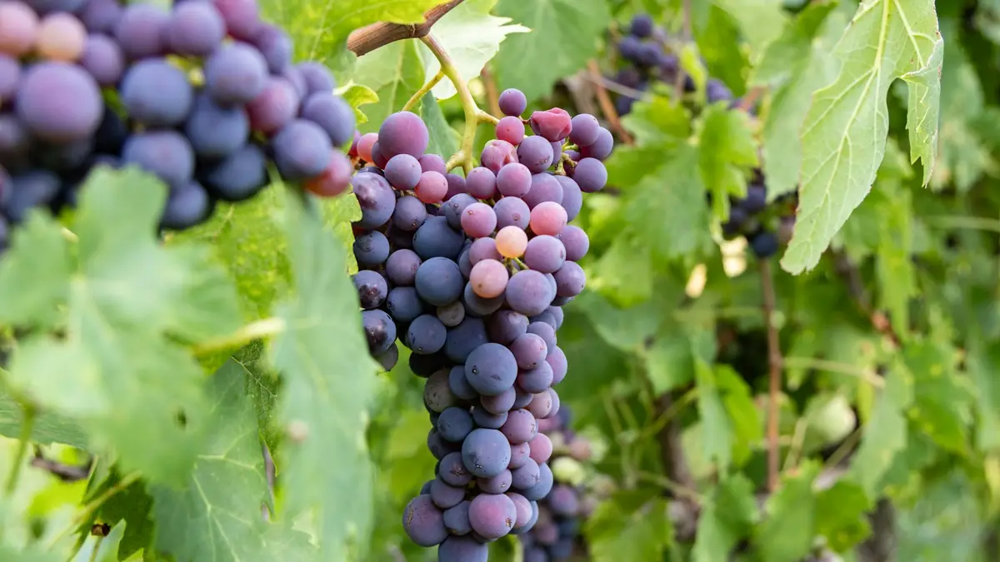

Home › Wine stories › Cabernet Sauvignon's Parents: How DNA Solved a Wine Mystery
Cabernet Sauvignon's Parents: How DNA Solved a Wine Mystery

Photo: Being Organic in EU on Unsplash
For centuries nobody knew where the world's most famous red grape came from. In 1996 two UC Davis scientists ran a DNA test and found a surprising pair of parents.
Cabernet Sauvignon is the closest thing wine has to a global superstar. It is the backbone of the great Médoc châteaux, the pride of Napa Valley and a staple everywhere from Chile to China. Yet for most of its history nobody could say where it had come from. It was simply there, growing in the vineyards of Bordeaux, with no birth certificate.
The answer arrived almost by accident. In the mid-1990s Carole Meredith, a grapevine geneticist at the University of California, Davis, and her doctoral student John Bowers were building DNA fingerprints for dozens of wine grapes. They ground up young leaves from 51 varieties and compared them at 30 microsatellite markers, short stretches of DNA that vary from one vine to another, much as a paternity lab compares people.
In 1996 the numbers pointed clearly to two parents: Cabernet Franc and Sauvignon Blanc. The finding was published in the journal Nature Genetics in May 1997, and Meredith called it a serendipitous discovery. Cabernet Franc was no shock, as the two red grapes share a name and a home. Sauvignon Blanc was the real surprise, because the shared word 'sauvignon' had always been assumed to be a coincidence, a nod to the vines' wild look rather than to any family tie.
How did a red grape and a white grape produce a child? No one planned it. Before the 1600s there is no record of growers deliberately crossing vines, so the researchers suggested a chance pollination between neighbouring vineyards. A seed from that cross grew into a vine someone liked enough to propagate, and every Cabernet Sauvignon vine on earth descends from that one seedling. It was established in Bordeaux by the late 17th or early 18th century.
The family tree has kept growing since. Cabernet Franc, probably originally from the Basque country, turns out to be one of the great ancestors of Bordeaux. In 2009 French researchers identified the other parent of Merlot as an obscure, nearly forgotten vine called Magdeleine Noire des Charentes, with Cabernet Franc once again the other parent. That makes Merlot and Cabernet Sauvignon half-siblings, which may explain why they blend so happily on the Left and Right Banks.
The Davis work also changed grape science for good. The same techniques later traced Chardonnay and many other varieties to Pinot and the humble Gouais Blanc, and showed that much of what we thought we knew about grape origins was guesswork. Ampelography, the old art of identifying vines by their leaves and berries, now had a laboratory partner.
To taste the family resemblance, try a pure Cabernet Franc from Chinon or Bourgueil in the Loire next to a Cabernet Sauvignon from Napa or Coonawarra. You will find the same leafy, blackcurrant and graphite notes, just turned up in the child. Then sip a cool-climate Sauvignon Blanc and look for that green, herbaceous streak: a little of it lives on in every glass of Cabernet.
Sources
- DNA Fingerprinting Reveals Parentage of Classic Wine Grape – UC Davis
- The parentage of a classic wine grape, Cabernet Sauvignon – Nature Genetics
- In the beginning was the grape – JancisRobinson.com
- The noble house of Carmenet – JancisRobinson.com
The Wine Reference newsletter
New wines, stories and career guides, one email a week at most.
Over 18s only. Unsubscribe any time with one click. Your email is stored securely by Kit and never shared.
Support The Wine Reference
This guide is free, with no paywall. If it helped you choose a bottle, you can buy me a glass and keep it growing.
🍷 Buy me a glass